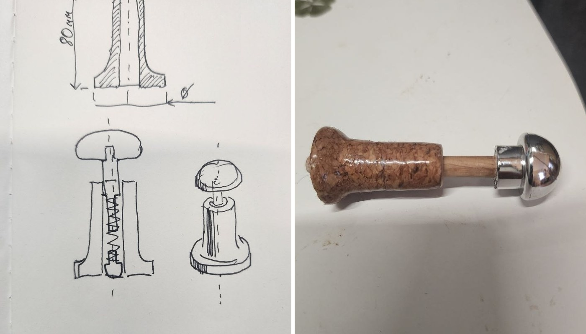

Vlad Filitovich
Multidisciplinary R&D Engineer combining hardware prototyping, manufacturing processes, experimental design, and software development.
R&D Projects

Accessible Button Actuator — Zojirushi Water Boiler
The boiler dispenses only while a small unlock button is held and a second button pressed — a precise, sustained fingertip movement that is painful or impossible with limited finger mobility. This attachment turns both buttons into raised, spring-loaded caps that can be worked with a loose hand or a closed fist.

SporeScope — Imaging Rig
Designed to automate long-term monitoring of fungal growth and evaluate whether simple, low-cost backlit imaging is sufficient to distinguish healthy mycelium from contamination without specialized optics.

Plant Imaging Rig
Designed to create an affordable system for capturing long-term plant growth from multiple viewing angles, enabling reconstruction of animated 3D models of slow biological processes. Unlike conventional photogrammetry systems that rely on many synchronized cameras, this approach uses a single rotating camera to reduce cost while supporting experiments lasting days or weeks.

JSC "Antik" — Historical Reproduction Manufacturing
Process engineer at a manufacturer of historically accurate reproductions of 18th–19th century military uniforms, edged weapons, and artifacts. Every product had two specifications that could conflict: what the historical object actually was, and what could be produced repeatably with available equipment and materials.